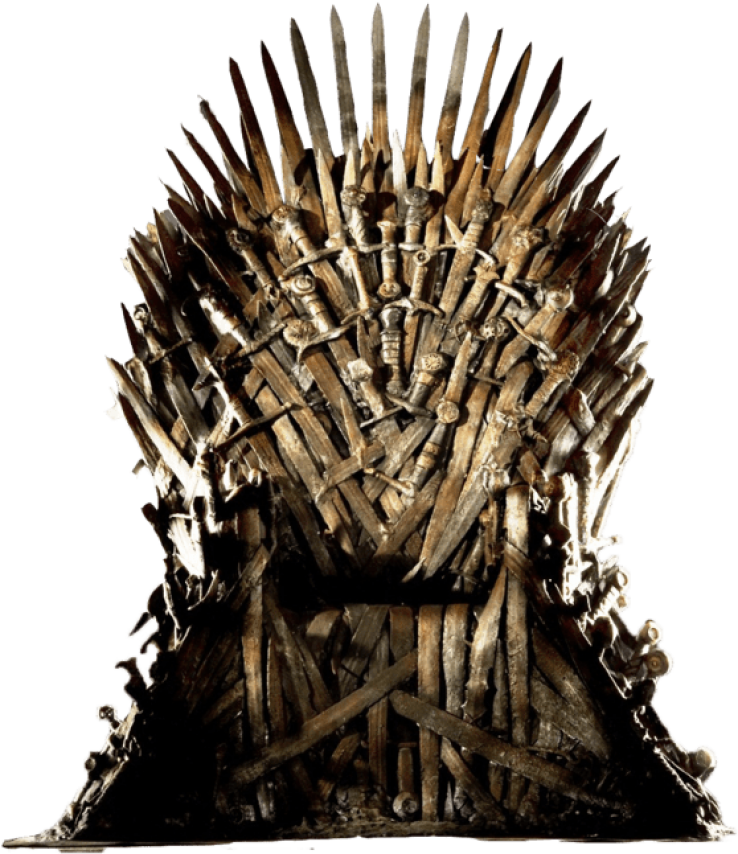

King's landing

King's Landing est la capitale et la plus grande ville des Six Royaumes. Situé sur la côte est de Westeros dans les Crownlands, juste au nord de l'endroit où la Blackwater Rush se jette dans la baie de Blackwater et surplombant la baie de Blackwater, King's Landing est le site du trône de fer et du donjon rouge, le siège du roi des Andals et les Premiers Hommes (d'où le nom).
Elle bénéficie d'un climat chaud et la vie y est luxueuse pour ceux qui peuvent se le permettre, bien qu'elle ne soit pas dépourvue de bidonvilles tels que Flea Bottom. La ville est surpeuplée et dangereuse dans le meilleur des cas, bien qu'elle soit surveillée par les Veille de la ville.